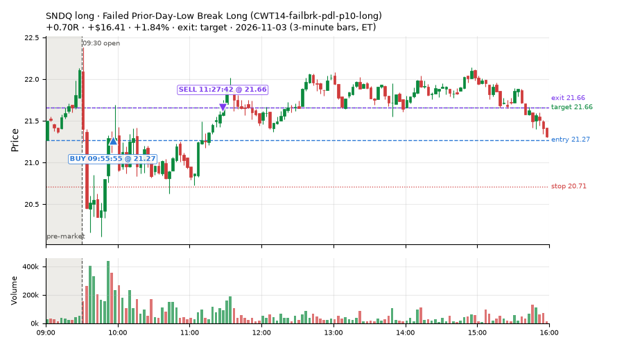
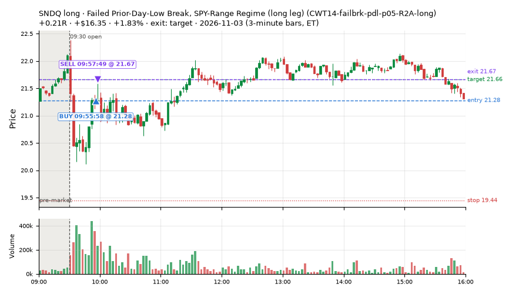
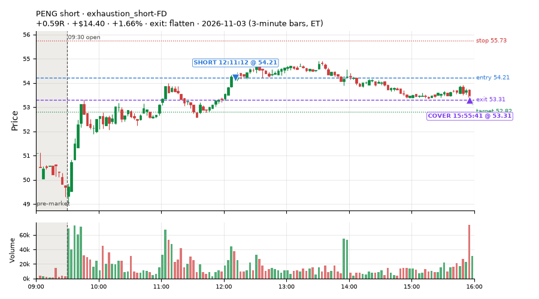
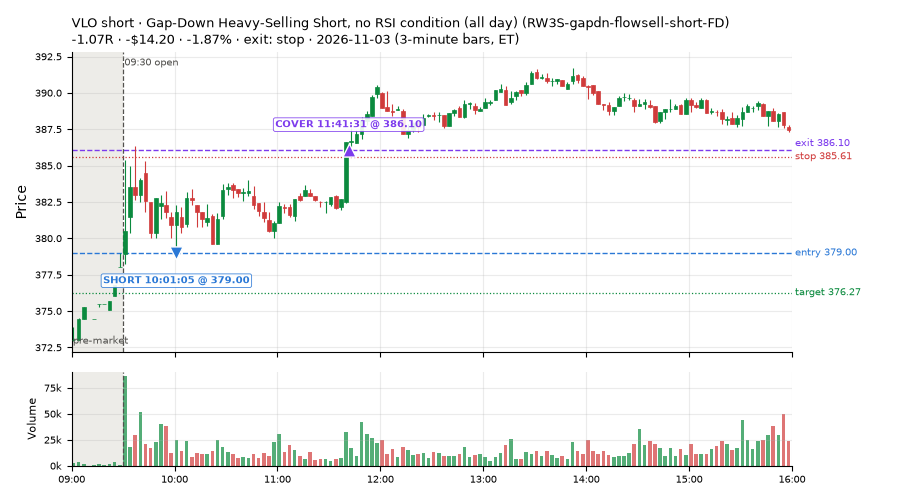
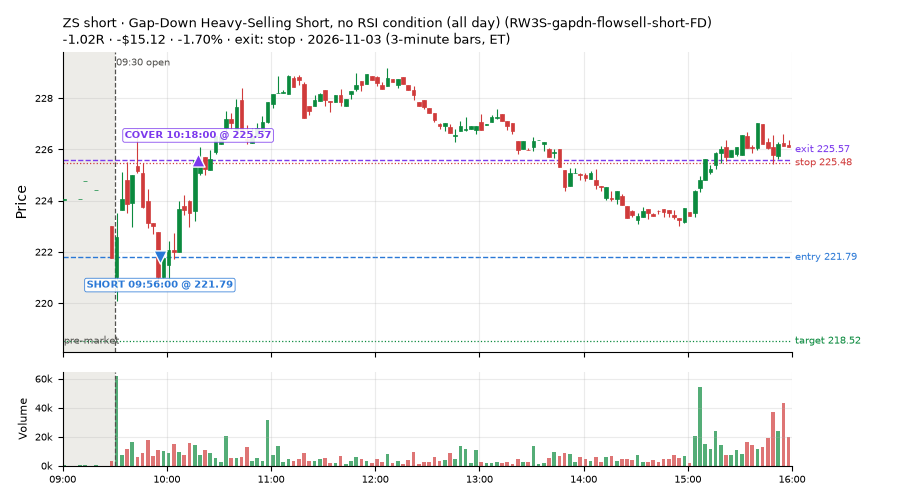
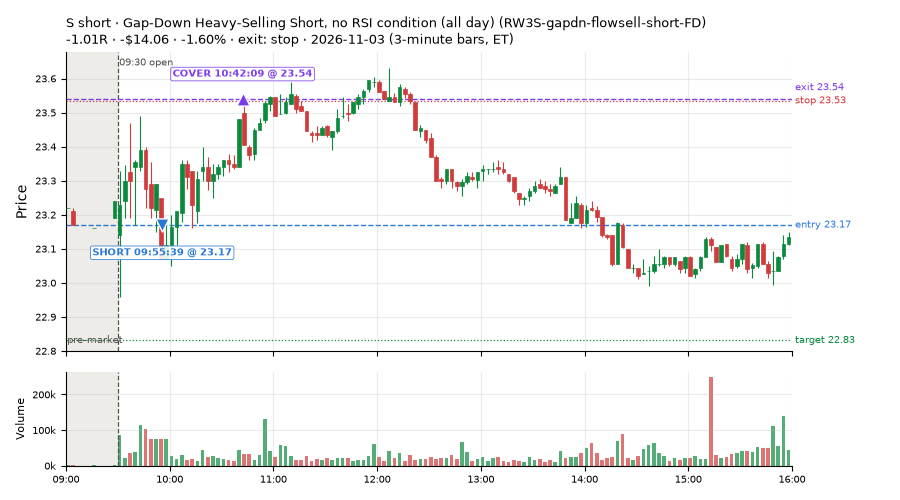
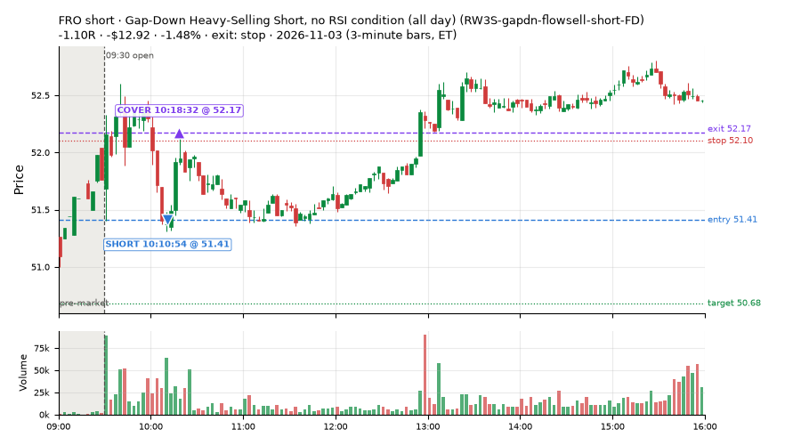
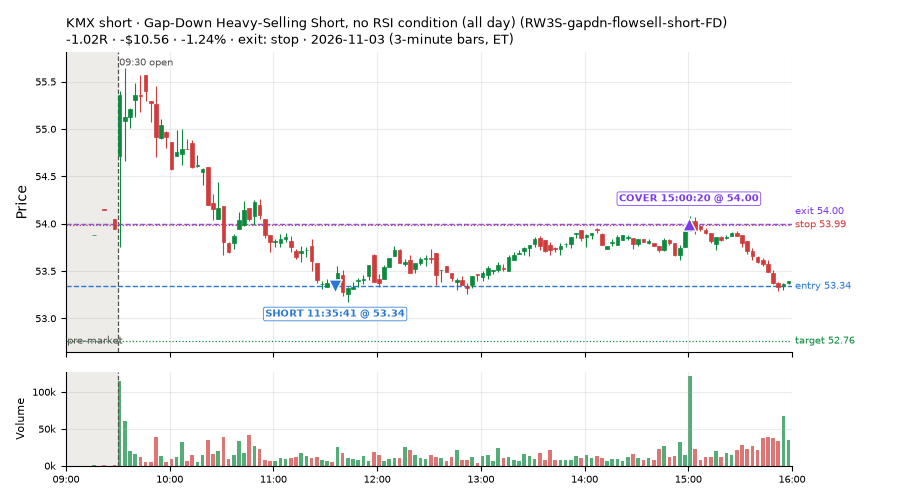

90 trades · win rate 67% · P/L $44.54
PROBATION: no live setup has passed both locked test periods. 10 owner-directed setups added 2026-10-08 (MarcoFlow top 5 + 5 new), untested live. RW6G1 (RW6 + VWAP band guard) added 2026-10-09, probation.

| Symbol | Setup | Side | In | Out | Entry | Exit | Exit reason | % gained | P/L |
|---|---|---|---|---|---|---|---|---|---|
| SNDQ | Failed Prior-Day-Low Break Long (CWT14-failbrk-pdl-p10-long) | long | 09:55 | 11:27 | 21.27 | 21.66 | target | +1.84% | $16.41 |
| SNDQ | Failed Prior-Day-Low Break, SPY-Range Regime (long leg) (CWT14-failbrk-pdl-p05-R2A-long) | long | 09:55 | 09:57 | 21.28 | 21.67 | target | +1.83% | $16.35 |
| PENG | exhaustion_short-FD | short | 12:11 | 15:55 | 54.21 | 53.31 | flatten | +1.66% | $14.40 |
| Symbol | Setup | Side | In | Out | Entry | Exit | Exit reason | % lost | P/L |
|---|---|---|---|---|---|---|---|---|---|
| VLO | RW3S-gapdn-flowsell-short-FD | short | 10:01 | 11:41 | 379.00 | 386.10 | stop | -1.87% | $-14.20 |
| ZS | RW3S-gapdn-flowsell-short-FD | short | 09:56 | 10:18 | 221.79 | 225.57 | stop | -1.70% | $-15.12 |
| S | RW3S-gapdn-flowsell-short-FD | short | 09:55 | 10:42 | 23.17 | 23.54 | stop | -1.60% | $-14.06 |
| FRO | RW3S-gapdn-flowsell-short-FD | short | 10:10 | 10:18 | 51.41 | 52.17 | stop | -1.48% | $-12.92 |
| KMX | RW3S-gapdn-flowsell-short-FD | short | 11:35 | 15:00 | 53.34 | 54.00 | stop | -1.24% | $-10.56 |








Signal to fill: median 2s, 90th percentile 4s (90 trades). Bars close each minute; the order follows the bar close.
Best excursion (MFE): median 0.39R; worst (MAE) median 0.44R. 39% of trades never got +0.25R in our favour; 0 reached +1R and still closed at or below 0.
| Symbol | Setup | Best R | Worst R | Closed R |
|---|---|---|---|---|
| PCAR | CWT05-flush-m05-v5-long | +0.31 | -1.37 | -1.43 |
| LEN | CWT14-failbrk-pdl-p10-lowvol-long | +0.59 | -1.09 | -1.11 |
| LEN | CWT14-failbrk-pdl-p10-long | +0.59 | -1.09 | -1.11 |
| HD | CWT14-failbrk-pdl-p10-long | +0.42 | -1.01 | -1.02 |
| MMM | RW3S-gapdn-flowsell-short-FD | +0.21 | -1.13 | -1.19 |
| Entry time | Trades | Win | Avg R | P/L |
|---|---|---|---|---|
| 09:50-10:30 | 46 | 65% | -0.08 | $-6.40 |
| 10:30-11:30 | 22 | 68% | +0.35 | $31.79 |
| 11:30-13:00 | 10 | 80% | +0.16 | $24.90 |
| 13:00-14:00 | 7 | 86% | +0.32 | $9.49 |
| 14:00-16:00 | 5 | 20% | -0.38 | $-15.24 |
| Setup | Trades | Win | Avg R | Adj R (net of SPY) | P/L |
|---|---|---|---|---|---|
| Panic Flush Reversal (5x volume) (CWT05-flush-m05-v5-long) | 1.0 | 0% | -1.43 | -1.34 | $-8.27 |
| Stretched Below VWAP Bounce (CWT13-vwapstretch-z05-long) | 2.0 | 100% | +0.34 | +0.19 | $5.09 |
| Failed Prior-Day-Low Break, SPY-Range Regime (long leg) (CWT14-failbrk-pdl-p05-R2A-long) | 20.0 | 70% | +0.01 | +0.01 | $23.42 |
| Failed Prior-Day-Low Break Long (CWT14-failbrk-pdl-p10-long) | 19.0 | 68% | +0.01 | -0.14 | $12.29 |
| Failed Prior-Day-Low Break Long (0.1 ATR, low volume) [fill] (CWT14-failbrk-pdl-p10-lowvol-long) | 10.0 | 80% | +0.09 | -0.03 | $9.77 |
| Sellers into Strength (all day) (MF5-flowsell-vwapup-rsi5hi) owner-directed; holdouts once: Sep-Oct -0.001R n264, Apr-Jun -0.010R n1199 | 10.0 | 80% | +0.57 | +0.30 | $26.73 |
| Afternoon VWAP Reclaim Fade (NS4-pm-vwap-reclaim-oversold-short) owner-directed; holdouts once: Sep-Oct -0.086R n49, Apr-Jun -0.080R n342 | 1.0 | 0% | -0.39 | -0.34 | $-2.75 |
| RW1-gapdn-bounce-flowsell-short-FD | 2.0 | 50% | +0.03 | -0.23 | $0.58 |
| Gap-Down Heavy-Selling Short, no RSI condition (all day) (RW3S-gapdn-flowsell-short-FD) | 24.0 | 54% | -0.04 | -0.14 | $-36.72 |
| exhaustion_short-FD | 1.0 | 100% | +0.59 | +0.53 | $14.40 |
Market direction (SPY, beta 1) accounted for $45.58 of today's $44.54; the rest ($-1.04) came from the setups themselves. Avg R net of SPY: -0.05 (incl. a hedge leg's cost; report only).
46 setups live today. Today: 189 signals, 90 taken, 7 lost because another setup held the symbol (4%). Since 2026-10-12 (17 sessions): 8528 signals, 4238 taken, 681 lost to other setups (8%). Peak open positions today 32 of 400 slots. Earnings blackout removed 1842 symbols before scanning.
Simulated playing time (not live): 4275 what-if trades of signals not taken, avg -0.10R, 58% winners; of them 681 lost to another setup (avg -0.20R).
Silent: LD4-st4-breadthup-t1s05-long, LD8-spy-dip030-breadthturn-spxl-holdtr-long, LD1-ns1-breadthup-t05s1-long, NM-RWR1-exh150-gapdn-spyup-pm-short, CWT04-backside-lh-a25-short, CWT04-backside-vwaptest-a25-short · Crowded out: MF5-flowsell-vwapup-rsi5hi, NS3-failed-vwap-reclaim-short-FD · Starved: NS5-sma50-flush-oversold-long-FD, exhaustion_short-FD, MF2-open-rsimidhi-flowsell, RW4-ns3-adv150-short-FD
| Prio | Setup | Today sig / taken | Sessions | Signals / taken / trades | Taken/day | Expected/day | Lost to other setups | Lost to (setup n) | Top skip reasons | SIMULATED: not-taken n / avg R / win | Verdict |
|---|---|---|---|---|---|---|---|---|---|---|---|
| 1 | Big Loser VWAP Reclaim Fade, Morning, Wide Stop NS3V1-am-widestop-short | 1 / 0 | 8 | 44 / 19 / 19 | 2.38 | 5.30 | 2 | NS3V1-am-widestop-short 2 | not shortable / shorts off 14, spread / quote / size 9, symbol held by another setup 2 | 25 / +0.12R / 76% | slow 11.9 entries/week; ~5 weeks to 60 trades |
| 2 | * Oversold EMA Cross-Down with Breadth Turning Up (near-miss) LD4-st4-breadthup-t1s05-long | 0 / 0 | 10 | 0 / 0 / 0 | 0.00 | – | 0 | – | – | 0 / – | silent no signals in 10 session(s); no expected rate on file |
| 3 | * Oversold Slope Turn with Breadth Turning Up (near-miss) LD5-st2-breadthup-t05s1-long | 0 / 0 | 10 | 1 / 0 / 0 | 0.00 | – | 1 | NS3V1-am-widestop-short 1 | symbol held by another setup 1 | 1 / +0.51R / 100% | slow no entries yet |
| 4 | * SPY Dip of 0.30%, Breadth Turn (SPXL, trailing) (near-miss) LD8-spy-dip030-breadthturn-spxl-holdtr-long | 0 / 0 | 10 | 0 / 0 / 0 | 0.00 | – | 0 | – | – | 0 / – | silent no signals in 10 session(s); no expected rate on file |
| 5 | * Oversold Slope Turn after an SPY Dip-Turn (near-miss) LD3-st2-idxturn-t05s1-long | 0 / 0 | 10 | 1 / 0 / 0 | 0.00 | – | 1 | NS3V1-am-widestop-short 1 | symbol held by another setup 1 | 1 / +0.51R / 100% | slow no entries yet |
| 6 | * SPY Dip of 0.2 ATR, Breadth Turn (SPXL, trailing) (near-miss) LD6-spy-dip020atr-breadthturn-spxl-holdtr-long | 0 / 0 | 10 | 2 / 2 / 2 | 0.20 | – | 0 | – | – | 0 / – | slow 1.0 entries/week; ~60 weeks to 60 trades |
| 7 | * Oversold Pop with Breadth Turning Up (near-miss) LD1-ns1-breadthup-t05s1-long | 0 / 0 | 10 | 0 / 0 / 0 | 0.00 | – | 0 | – | – | 0 / – | silent no signals in 10 session(s); no expected rate on file |
| 8 | * Shallow Nasdaq Dip, Breadth Turn (TQQQ) (near-miss) LD2-qqq-dip015-breadthturn-tqqq-t05s1-long | 0 / 0 | 10 | 4 / 4 / 4 | 0.40 | – | 0 | – | – | 0 / – | slow 2.0 entries/week; ~30 weeks to 60 trades |
| 9 | * Oversold Pop after an SPY Dip-Turn (trailing) (near-miss) LD7-ns1-idxturn-holdtr-long | 0 / 0 | 10 | 1 / 1 / 1 | 0.10 | – | 0 | – | – | 0 / – | slow 0.5 entries/week; ~120 weeks to 60 trades |
| 10 | Monday Weak-RS NS3 Short (near-miss) NM-RWN5-ns3-mon-weakrs-short | 0 / 0 | 12 | 19 / 7 / 7 | 0.58 | – | 0 | – | not shortable / shorts off 6, spread / quote / size 5, other 1 | 12 / +0.29R / 67% | slow 2.9 entries/week; ~21 weeks to 60 trades |
| 11 | Early NS3 Short While QQQ Up (near-miss) NM-RWR3-ns3-qqqup-early-short | 0 / 0 | 12 | 11 / 3 / 3 | 0.25 | – | 0 | – | spread / quote / size 5, not shortable / shorts off 3 | 8 / +0.24R / 62% | slow 1.2 entries/week; ~48 weeks to 60 trades |
| 12 | Early NS3 Short While SPY Up (near-miss) NM-RWN3-ns3-spyup-early-short | 1 / 0 | 12 | 19 / 4 / 4 | 0.33 | – | 1 | NS3V1-am-widestop-short 1, NM-RWN5-ns3-mon-weakrs-short 1, NM-RWR3-ns3-qqqup-early-short 1 | not shortable / shorts off 7, spread / quote / size 6, symbol held by another setup 1 | 15 / +0.28R / 67% | slow 1.7 entries/week; ~36 weeks to 60 trades |
| 13 | Late-Day ETF Dip Buy (near-miss) NM-ETF-late-dip-di-long | 0 / 0 | 12 | 10 / 8 / 8 | 0.67 | – | 0 | – | spread / quote / size 1, other 1 | 2 / +0.19R / 50% | slow 3.3 entries/week; ~18 weeks to 60 trades |
| 14 | NS2 Up-3 Short, QQQ Up, Slope Down (near-miss) NM-RWR4-ns2-up3-qqqup-slopedn-short | 0 / 0 | 12 | 6 / 5 / 5 | 0.42 | – | 0 | – | not shortable / shorts off 1 | 1 / -1.04R / 0% | slow 2.1 entries/week; ~29 weeks to 60 trades |
| 15 | Afternoon Exhaustion Short, Gap-Down, SPY Up (near-miss) NM-RWR1-exh150-gapdn-spyup-pm-short | 0 / 0 | 12 | 0 / 0 / 0 | 0.00 | – | 0 | – | – | 0 / – | silent no signals in 12 session(s); no expected rate on file |
| 16 | NS2 Short, SPY Up 0.5%, Not Friday (near-miss) NM-RWN4-ns2-spyup05-notfri-short | 0 / 0 | 12 | 9 / 8 / 8 | 0.67 | – | 0 | – | not shortable / shorts off 1 | 1 / -1.04R / 0% | slow 3.3 entries/week; ~18 weeks to 60 trades |
| 17 | Gap-Down Capitulation Buy (near-miss) NM-AR-AM-gapdown-capitulation-long | 1 / 0 | 12 | 61 / 40 / 40 | 3.33 | – | 0 | – | spread / quote / size 20, other 1 | 21 / -0.27R / 38% | ok 16.7 entries/week |
| 18 | Quiet Downtrend Bounce Short (near-miss) NM-AMS-N1-quiet-morning-short | 0 / 0 | 12 | 2 / 1 / 1 | 0.08 | – | 1 | NM-AR-AM-gapdown-capitulation-long 1 | symbol held by another setup 1 | 1 / +0.51R / 100% | slow 0.4 entries/week; ~144 weeks to 60 trades |
| 19 | Gap-Down Reclaim Fade, Afternoon (near-miss) NM-PM-gapdn-above-pdh-rvol-short | 0 / 0 | 12 | 2 / 2 / 2 | 0.17 | – | 0 | – | – | 0 / – | slow 0.8 entries/week; ~72 weeks to 60 trades |
| 20 | Gap-Down VWAP Loss Short, Slope Filter (near-miss) NM1-cwt09-g10-vwaploss-short | 2 / 0 | 12 | 47 / 4 / 4 | 0.33 | – | 0 | – | not shortable / shorts off 38, spread / quote / size 3, other 2 | 43 / +0.09R / 56% | slow 1.7 entries/week; ~36 weeks to 60 trades |
| 21 | Afternoon Higher-Low Long (near-miss) NM-HL-T75-pm-long | 0 / 0 | 12 | 47 / 43 / 43 | 3.58 | – | 2 | CWT09-gapdn-vwaploss-g10-short 2, CWT09-gapdn-bounce-g10-lowerhalf-short 2 | symbol held by another setup 2, spread / quote / size 2 | 4 / +0.12R / 75% | ok 17.9 entries/week |
| 22 | Backside Lower-High Short (big runner) CWT04-backside-lh-a25-short | 0 / 0 | 17 | 0 / 0 / 0 | 0.00 | – | 0 | – | – | 0 / – | silent no signals in 17 session(s); no expected rate on file |
| 23 | Backside VWAP-Test Short (big runner) CWT04-backside-vwaptest-a25-short | 0 / 0 | 17 | 0 / 0 / 0 | 0.00 | – | 0 | – | – | 0 / – | silent no signals in 17 session(s); no expected rate on file |
| 24 | Gap-Down VWAP Loss Short (10% gap) CWT09-gapdn-vwaploss-g10-short | 6 / 0 | 17 | 141 / 11 / 11 | 0.65 | – | 0 | – | not shortable / shorts off 123, spread / quote / size 5, daily loss cap 1 | 130 / -0.01R / 56% | slow 3.2 entries/week; ~19 weeks to 60 trades |
| 25 | Panic Flush Reversal (deep, 5x volume) CWT05-flush-m075-v5-long | 0 / 0 | 17 | 7 / 4 / 4 | 0.24 | – | 0 | – | daily loss cap 2, spread / quote / size 1 | 3 / +0.42R / 100% | slow 1.2 entries/week; ~51 weeks to 60 trades |
| 26 | NS5-sma50-flush-oversold-long-FD NS5-sma50-flush-oversold-long-FD | 0 / 0 | 10 | 12 / 10 / 10 | 1.00 | 6.32 | 0 | – | spread / quote / size 2 | 2 / +0.06R / 50% | starved 1.00 entries/day vs ~6.32 expected |
| 27 | Gap-Down Bounce Rejection Short (10% gap) CWT09-gapdn-bounce-g10-lowerhalf-short | 3 / 0 | 17 | 142 / 17 / 17 | 1.00 | – | 0 | – | not shortable / shorts off 116, spread / quote / size 6, price through stop/target 1 | 125 / -0.22R / 37% | slow 5.0 entries/week; ~12 weeks to 60 trades |
| 28 | Backside Lower-High Short CWT04-backside-lh-a15-short | 0 / 0 | 17 | 6 / 2 / 2 | 0.12 | – | 0 | – | spread / quote / size 2, daily loss cap 1, not shortable / shorts off 1 | 4 / +0.43R / 75% | slow 0.6 entries/week; ~102 weeks to 60 trades |
| 29 | Panic Flush Reversal (5x volume) CWT05-flush-m05-v5-long | 1 / 1 | 17 | 12 / 7 / 7 | 0.41 | – | 1 | CWT14-failbrk-orl-p10-long 1 | daily loss cap 2, spread / quote / size 2, symbol held by another setup 1 | 5 / +0.51R / 100% | slow 2.1 entries/week; ~29 weeks to 60 trades |
| 30 | Panic Flush Reversal (deep, 3x volume) CWT05-flush-m075-v3-long | 0 / 0 | 17 | 18 / 12 / 12 | 0.71 | – | 0 | – | daily loss cap 3, spread / quote / size 2, broker rejected 1 | 6 / +0.17R / 83% | slow 3.5 entries/week; ~17 weeks to 60 trades |
| 31 | Spike-Pullback Flag Breakout CWT12-flag-s1-long | 0 / 0 | 17 | 20 / 15 / 15 | 0.88 | – | 0 | – | daily loss cap 2, spread / quote / size 1, broker rejected 1 | 5 / -0.06R / 80% | slow 4.4 entries/week; ~14 weeks to 60 trades |
| 32 | Backside VWAP-Test Short CWT04-backside-vwaptest-a15-short | 0 / 0 | 17 | 14 / 7 / 7 | 0.41 | – | 1 | CWT14-failbrk-pdl-p05-lowvol-long 1 | spread / quote / size 3, not shortable / shorts off 2, symbol held by another setup 1 | 7 / +0.25R / 43% | slow 2.1 entries/week; ~29 weeks to 60 trades |
| 33 | Early Sellers into a Pop (index down, no gap up) (near-miss) NM-MF3-qqqdn-gapdn-FD | 0 / 0 | 10 | 43 / 24 / 24 | 2.40 | 4.90 | 4 | NM-AR-AM-gapdown-capitulation-long 4 | not shortable / shorts off 9, spread / quote / size 6, symbol held by another setup 4 | 19 / +0.13R / 58% | slow 12.0 entries/week; ~5 weeks to 60 trades |
| 34 | Stretched Above VWAP Fade (far) CWT13-vwapstretch-z075-short | 1 / 0 | 17 | 31 / 15 / 15 | 0.88 | – | 0 | – | not shortable / shorts off 9, daily loss cap 4, spread / quote / size 2 | 16 / -0.43R / 31% | slow 4.4 entries/week; ~14 weeks to 60 trades |
| 35 | RW1-gapdn-bounce-flowsell-short-FD RW1-gapdn-bounce-flowsell-short-FD | 11 / 2 | 10 | 84 / 45 / 45 | 4.50 | 17.10 | 4 | NM-AR-AM-gapdown-capitulation-long 1, NM-HL-T75-pm-long 1, CWT12-coil-k4-long 1 | spread / quote / size 11, daily loss cap 10, not shortable / shorts off 8 | 39 / +0.37R / 72% | ok 22.5 entries/week |
| 36 | Sellers into Strength (all day) MF5-flowsell-vwapup-rsi5hi | 11 / 10 | 10 | 38 / 10 / 10 | 1.00 | 15.47 | 20 | MF5-flowsell-vwapup-rsi5hi-FD 19, NM-AR-AM-gapdown-capitulation-long 1 | symbol held by another setup 20, spread / quote / size 3, other 3 | 28 / -0.15R / 46% | crowded-out 20 of 38 signals (53%) lost to setups already holding the symbol |
| 37 | exhaustion_short-FD exhaustion_short-FD | 3 / 1 | 10 | 96 / 62 / 62 | 6.20 | 64.64 | 3 | CWT12-coil-k4-long 3 | not shortable / shorts off 22, spread / quote / size 8, symbol held by another setup 3 | 34 / -0.19R / 44% | starved 6.20 entries/day vs ~64.64 expected |
| 38 | Stretched Below VWAP Bounce (far) CWT13-vwapstretch-z075-long | 0 / 0 | 17 | 49 / 14 / 14 | 0.82 | – | 0 | – | daily loss cap 28, spread / quote / size 4, other 3 | 35 / -0.30R / 43% | slow 4.1 entries/week; ~15 weeks to 60 trades |
| 39 | Failed Prior-Day-Low Break, SPY-Range Regime (long leg) CWT14-failbrk-pdl-p05-R2A-long | 28 / 20 | 2 | 59 / 39 / 39 | 19.50 | – | 2 | RW3S-gapdn-flowsell-short-FD 2 | spread / quote / size 18, symbol held by another setup 2 | 20 / -0.30R / 55% | ok 97.5 entries/week |
| 40 | Failed Prior-Day-Low Break, SPY-Range Regime (short leg) CWT14-failbrk-pdl-p05-R2A-short | 0 / 0 | 2 | 0 / 0 / 0 | 0.00 | – | 0 | – | – | 0 / – | quiet - wait no signals in 2 session(s); too early to tell |
| 41 | Stretched Below VWAP Bounce CWT13-vwapstretch-z05-long | 2 / 2 | 16 | 343 / 140 / 140 | 8.75 | – | 2 | CWT14-failbrk-pdh-p05-lowvol-short 1, CWT09-gapdn-vwaploss-g10-short 1, CWT09-gapdn-bounce-g10-lowerhalf-short 1 | daily loss cap 152, other 25, spread / quote / size 23 | 202 / -0.16R / 58% | ok 43.8 entries/week |
| 42 | Early Sellers, Mid-High RSI MF2-open-rsimidhi-flowsell | 1 / 0 | 5 | 3 / 1 / 1 | 0.20 | 1.30 | 0 | – | not shortable / shorts off 1, other 1 | 2 / -1.13R / 0% | starved 0.20 entries/day vs ~1.30 expected |
| 43 | Afternoon VWAP Reclaim Fade NS4-pm-vwap-reclaim-oversold-short | 2 / 1 | 5 | 15 / 9 / 9 | 1.80 | 3.05 | 0 | – | spread / quote / size 3, other 3 | 6 / +0.44R / 67% | slow 9.0 entries/week; ~7 weeks to 60 trades |
| 44 | Failed Prior-Day-Low Break Long (0.1 ATR, low volume) [fill] CWT14-failbrk-pdl-p10-lowvol-long | 22 / 10 | 12 | 258 / 167 / 167 | 13.92 | – | 9 | CWT14-failbrk-pdl-p10-long 3, CWT14-failbrk-pdl-p05-lowvol-long 2, RW3S-gapdn-flowsell-short-FD 2 | spread / quote / size 57, daily loss cap 12, other 11 | 88 / -0.16R / 60% | ok 69.6 entries/week |
| 45 | Failed Prior-Day-Low Break Long CWT14-failbrk-pdl-p10-long | 44 / 19 | 17 | 698 / 442 / 442 | 26.00 | – | 24 | CWT14-failbrk-pdl-p10-lowvol-long 15, CWT14-failbrk-pdl-p05-lowvol-long 4, CWT14-failbrk-pdl-p05-long 2 | spread / quote / size 160, daily loss cap 31, symbol held by another setup 24 | 253 / -0.08R / 64% | ok 130.0 entries/week |
| 46 | Gap-Down Heavy-Selling Short, no RSI condition (all day) RW3S-gapdn-flowsell-short-FD | 49 / 24 | 1 | 49 / 24 / 24 | 24.00 | – | 1 | CWT14-failbrk-pdl-p05-R2A-long 1, CWT14-failbrk-pdl-p10-lowvol-long 1, CWT14-failbrk-pdl-p10-long 1 | other 12, spread / quote / size 9, not shortable / shorts off 3 | 25 / -0.28R / 40% | ok 120.0 entries/week |
Every trade is attached as a CSV you can open and edit in Excel or Google Sheets. Live page: https://misiti15.github.io/MCF/live/